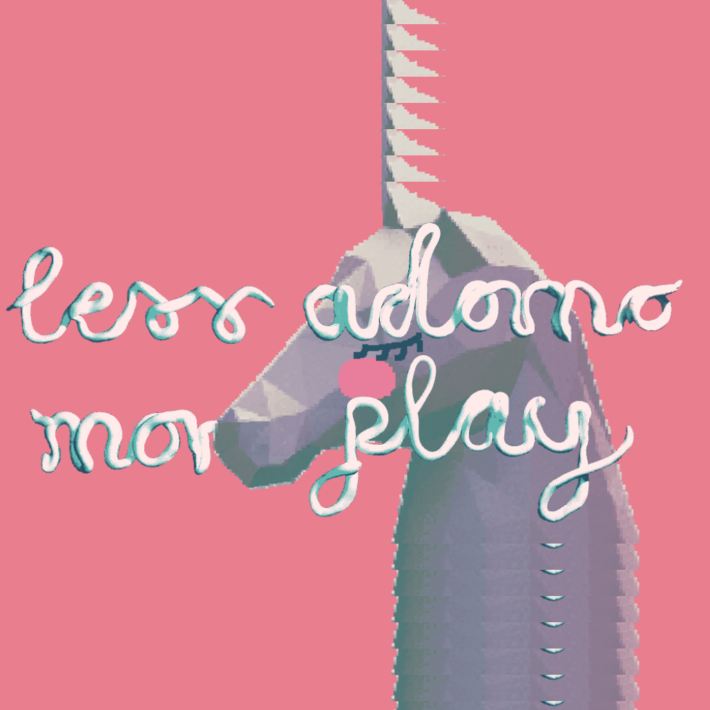

- KOLLEKTIVARBEIT
- 
- less adorno ♞ more play (2017)
- co-organisation, co-kuration, gestaltung der ausstellung & website
- moreplay.likesyou.org
- tickle my computertois (2017)
- co-organisation, co-kuration, gestaltung der ausstellung & website
- computertois.github.io
- lady*fest kassel (2015 - 2017)
- co-organisation und co-gestaltung
- ladyfestkassel.tumblr.com/tagged/2015
- tinypalace Festival (2016)
- co-organisation, co-kuration, gestaltung der austellung & website (unter anderem)
- tinypalace.de
- PROFIL
- nicole brauer / voec ist Games-machende, Künstler*in, Studierende, sometimes Kurator, sometimes Aktivistin, sometimes perverted space queen.
- Sie* beschäftigt sich mit queeren Spielformen, perversen lo-fi Ästhetiken und hackable Systemen, insbesondere im Bereich von digitalen Games. Unter anderem hat sie* das tinypalace Games Festival co-organisiert und an zwei lady*festen in Kassel mitgewerkelt. Ihr* Game shake yer dix wurde zuletzt beim UCLA Game Art Festival in der 18+ Sektion ausgestellt.
- MAIL voec (at) posteo.net
- ITCH voec.itch.io
- TWITTER @notbanachtarski